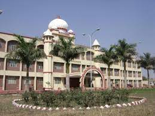

Shri Vaishnav Vidyapeeth Vishwavidyalaya (SVVV) is a private university located in Indore, Madhya Pradesh, India. SVVV is known for its diverse range of academic programs and its commitment to providing quality education to students.

Establishment
SVVV was established in 2015 and is managed and run by Shri Vaishnav Vidyapeeth Trust,
a prominent educational trust in Indore with a
long history of promoting education and culture in the region.
Campus: The university campus is situated in the lush green surroundings of Indore and offers state-of-the-art facilities
for students. The campus provides a conducive environment for learning and research.
Academic Programs: SVVV offers a wide range of undergraduate, postgraduate, and doctoral programs in various disciplines.
These include courses in engineering, management, computer applications, commerce, pharmacy, law, and more. The university is known for its focus on industry-oriented programs and practical exposure to students.
Faculty: SVVV boasts a team of qualified and experienced faculty members who are dedicated to imparting knowledge and nurturing the intellectual growth of their students.
Research and Innovation: The university encourages research and innovation among its students and faculty. It supports research projects and provides opportunities for students to participate in research activities.
Collaborations: SVVV has collaborations with several reputed institutions and industries, fostering academic and research exchange programs for students and faculty. This helps students gain practical experience and exposure to real-world scenarios.
Placements: SVVV has a dedicated placement cell that assists students in securing job opportunities. The university has a good track record of placing its students in leading companies and organizations.
Infrastructure: The campus is equipped with modern classrooms, well-stocked libraries, laboratories, sports facilities, and hostels to cater to the needs of students.
Cultural and Extracurricular Activities: SVVV promotes a vibrant campus life by organizing cultural events, seminars, workshops, and extracurricular activities to help students develop their overall personality.
Recognition: SVVV is recognized by the University Grants Commission (UGC) and offers programs that are approved by relevant regulatory bodies